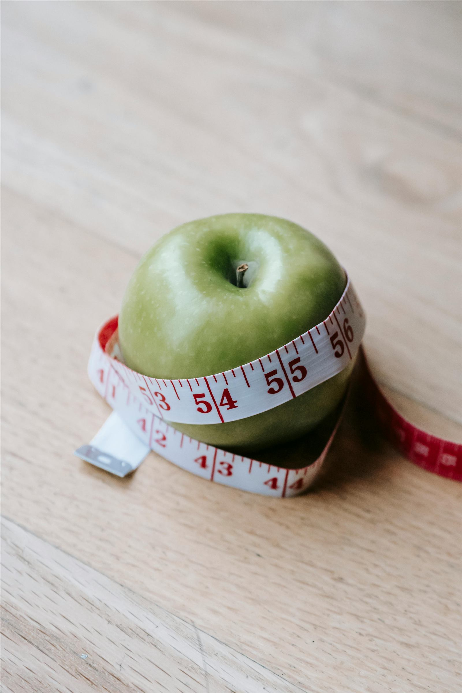
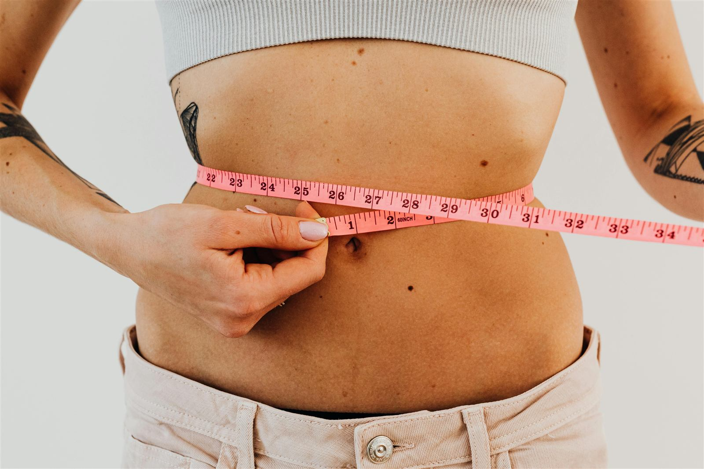
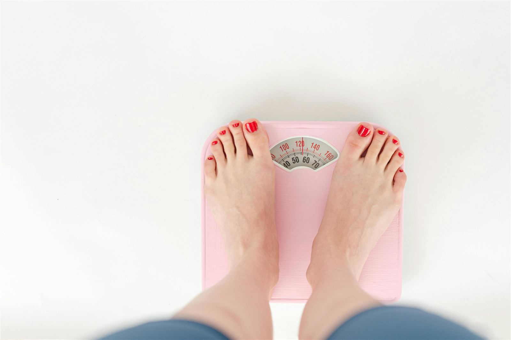
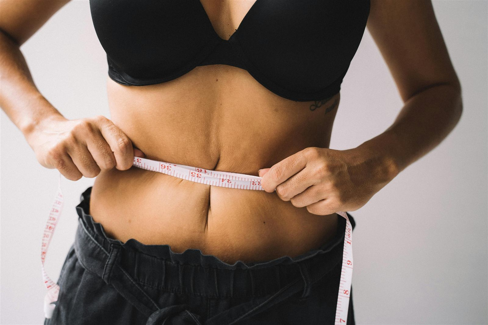

Armazenamento
Insulina
Leva a glicose para dentro das células. Picos frequentes favorecem o armazenamento de gordura e dificultam usá-la como energia.
Emagrecimento & saúde metabólica
Entenda o que realmente acontece no seu corpo — hormônios, energia e músculo — e construa um processo que você consegue manter.

01
Muitas pessoas associam emagrecimento apenas à estética. No entanto, livros como O Código da Obesidade, de Jason Fung, mostram que o processo está profundamente ligado aos hormônios — especialmente à insulina.
Emagrecer não é apenas comer menos: é reorganizar padrões alimentares, reduzir picos de insulina e permitir que o corpo use gordura como fonte de energia.

02
Porque são construídas sobre restrição extrema, não sobre sustentabilidade. O corpo reage — e a conta chega.
Cortes bruscos de calorias e grupos alimentares inteiros.
O corpo passa a economizar energia para se proteger.
Hormônios da fome sobem e a saciedade demora a chegar.
A dieta é abandonada e o peso volta — muitas vezes maior.
Emagrecimento não é sobre comer menos — é sobre criar um ambiente metabólico favorável.
Mudanças sustentáveis acontecem quando alteramos identidade e hábitos de forma gradual.
03
Fome, saciedade e armazenamento de gordura são, em grande parte, conversas químicas.
Armazenamento
Leva a glicose para dentro das células. Picos frequentes favorecem o armazenamento de gordura e dificultam usá-la como energia.
Fome
Produzida principalmente no estômago, sinaliza fome. Tende a subir com dietas muito restritivas e noites mal dormidas.
Saciedade
Liberada pelo tecido adiposo, avisa o cérebro que há energia suficiente. Quando o sinal falha, a sensação de fome persiste.

04
Do ponto de vista fisiológico, o déficit calórico é condição necessária para perder peso: o corpo precisa gastar mais energia do que consome para recorrer às reservas de gordura.
Mas cortar calorias de forma agressiva pode derrubar o metabolismo, aumentar a fome e consumir músculo. A chave não é comer o mínimo — é estruturar um déficit inteligente e sustentável.

O que a balança mostra
O que você quer de verdade
Proteína adequada e treino de força direcionam o corpo a usar gordura como combustível, minimizando a perda muscular.
05
Estimativa pela equação de Mifflin-St Jeor. Use como ponto de partida, não como regra.
Valores estimados, para fins educativos. Gestantes, pessoas com doenças metabólicas ou em uso de medicação devem buscar orientação de um nutricionista ou médico.
06
Constância vence intensidade. Marque o que você já pratica — fica salvo neste navegador.
Comece por um. Só um.
07
Não necessariamente. O que determina a perda de peso é o déficit sustentado. Reduzir carboidratos refinados ajuda a controlar picos de insulina e a fome, mas o melhor plano é aquele que você consegue seguir.
Em geral, algo entre 0,5% e 1% do peso corporal por semana é considerado um ritmo seguro, que preserva músculo e reduz o risco de efeito rebote.
Oscilações de água, sal, ciclo menstrual e ganho de músculo mascaram a perda de gordura. Acompanhe também medidas, fotos e como as roupas vestem — e avalie a tendência de algumas semanas, não um dia.
Pode ajudar algumas pessoas a organizar a rotina e comer menos, mas não é obrigatório. Se causar compulsão ou muito desconforto, não é a estratégia certa para você.
Montar minha estratégiaEmagrecimento não é um evento isolado, nem se resolve com fórmulas extremas. É um processo biológico e comportamental — e quando você entende isso, deixa de buscar atalhos e passa a ter estratégia.